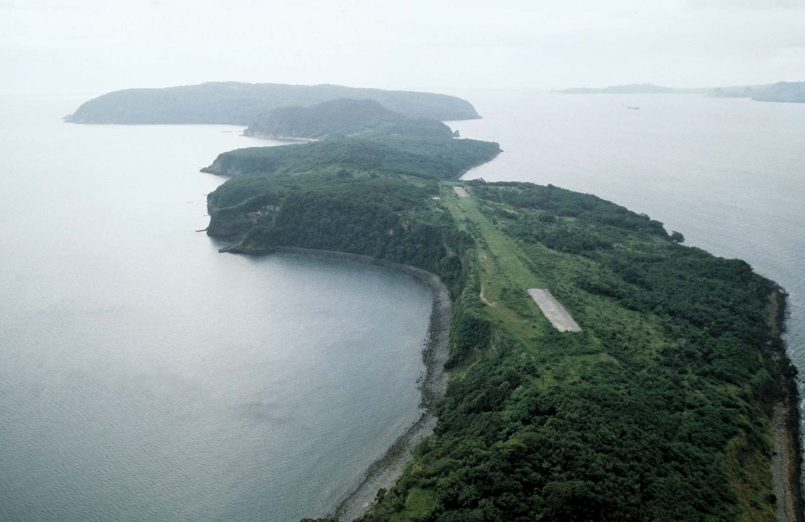
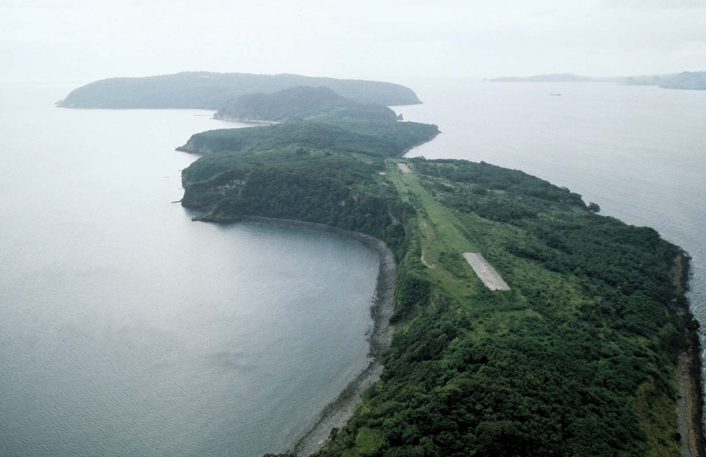

Corregidor is an island in the entrance of Manila Bay in the Philippines which serves as the country’s immediate harbor defense against enemy warships during the World War II. After the War, the island serves as a historical monument that attracts the tourist to take a look at the ruins of military installations, wrecked cannons and artillery, and war-ravaged buildings.
 
